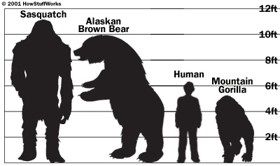
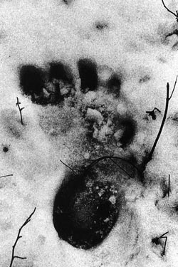
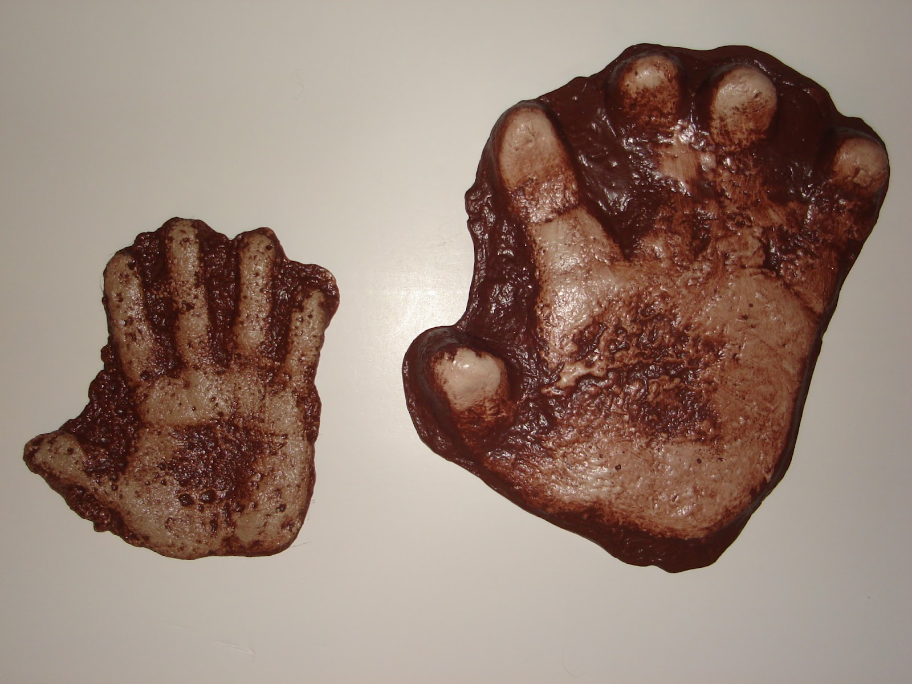
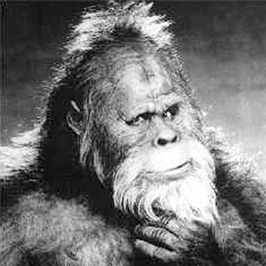
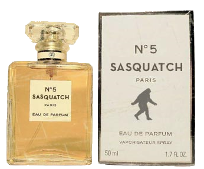

When the weather is beautiful, you might want to walk around and enjoy the beautiful forest in front of your house
And all we can do is to warn you. Pay attention to the little things that you could hear or see. Maybe, you will be observed, and you won't know it...
Let's talk of something hiding. Something, or someone shall we say, who is a big question mark in the USA and Canada History.
Have you ever heard to talk about a hairy man wandering in the forest, searching some food and living like a beast? In any case, you will learn a lot of things with us. Some of them will be strange, even disturbing, but we are here to highlight some informations that could be important to understanding our world.
Bigfoot, also known as Sasquatch depending on the location is really difficult to see. Nevertheless, a lot of sightings where recording all along the past years.
If we analyze various descriptions, we can relatively well portray some physical points of the bigfoot. Here are the main ones:
| Informations | Images and resources | |
|---|---|---|
| Diet | Omnivorous | |
| Height | around 6 ft 6 in - 10 ft. tall (2-3 m) |  |
| Weight | 400 – 1000 lbs (180-450 kgs) | |
| Footprint | 12-22 in (30-56 cm) length, 5 – 11 inches (12 – 28 cm) width at ball, 2 – 8 inches (5 – 20 cm) heel width |  |
| Hands | 6 – 8.5 inch (15-22 cm) palm width. Stubby fingers. |  |
| Hair | Dark Brown/Reddish, matted. Short on the face and long on the body. | |
| Skin | Color ranges from black charcoal to deep brown, reddish brown and gray | |
| Head | Sagittal Crest | |
| Facial features | Large brow ridge. Flat, black nose. Thin human-like lips. |  |
| Eyes | Brown/Red | |
| Odor | Strong smell, could be a defense mechanism. Smell like a mix of swat, manure, charred wood and burning rubber |  |
| Voice | Difficult to describe, different according to the witnesses |
Bigfoot, also known as Sasquatch, is a hairy creature with some human characteristics. It's a cryptid in American folklore. The lack of physical evidences lead to a lot of hypotheses. Some people think that it is real, others that it is a hoax.
Bigfoot, also known as Sasquatch, is a hairy creature with some human characteristics. It's a cryptid in American folklore. The lack of physical evidences lead to a lot of hypotheses. Some people think that it is real, others that it is a hoax.
Sasquatch is an anglicized derivative of the word "Sésquac" which mean "wild man" used by the Coast Salish Indians of the Fraser Valley and parts of Vancouver Island (British Columbia). Bigfoot is at first a journalistic term, now used by a lot of people.
Some of scientists believing in Bigfoot have made some hypothesis about it. For them, Bigfoot might be a surviving member of a presumed-extinct race of ancient apes.
Something is certain, we have found reported sighting of Bigfoot dating a long time ago: Native Americans have their own reports about it!
Here is the end of our story telling. Let us know if you enjoyed it!